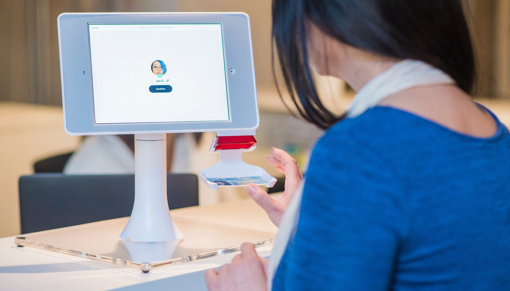

Artikel · Regulasi
Aturan Baru Registrasi SIM Card 2026: Wajib Scan Wajah
10 Februari 2026 · 1 menit baca

Pemerintah Indonesia melalui Kementerian Komunikasi dan Digital (Komdigi) baru saja mengeluarkan aturan registrasi SIM card dengan alasan utama yakni untuk mereduksi SMS penipuan.
Mulai January 19, 2026, Peraturan Menteri Komunikasi dan Digital Nomor 7 Tahun 2026 resmi berlaku. Aturan ini mengubah total cara kita meregistrasi kartu SIM (SIM card). Jika dulu kita sibuk mencari Nomor Kartu Keluarga (KK), ke depan wajah Andalah kuncinya.
Berikut adalah 5 hal penting yang wajib diketahui rakyat Indonesia mengenai aturan baru ini.
- Wajib scan wajah, bukan hanya NIK
Perubahan paling mendasar dalam regulasi ini adalah penghapusan syarat Nomor KK untuk verifikasi. Sebagai gantinya, pendaftaran kartu perdana (prabayar maupun pascabayar) bagi WNI wajib menggunakan:
Nomor Induk Kependudukan (NIK)
Data Biometrik Wajah (Face Recognition)
Sistem ini akan mencocokkan wajah Anda secara real-time dengan data kependudukan di Dukcapil. Saat mendaftar mandiri via aplikasi, akan ada teknologi liveness detection (deteksi gerak) untuk memastikan yang mendaftar adalah manusia asli.
- Kapan Aturan Ini Berlaku?
Peraturan ini resmi diundangkan pada 19 Januari 2026. Namun, jangan panik dulu. Pemerintah memberikan masa transisi selama 6 bulan.
Januari - Juli 2026: Anda masih bisa menggunakan metode lama (NIK & KK) atau mulai mencoba metode baru, sembari operator telekomunikasi menyiapkan sistemnya.
Setelah 6 Bulan: Seluruh pendaftaran kartu baru wajib menggunakan pemindaian wajah. Metode lama akan ditutup total.
Permen Komdigi 7/2026 registrasi SIM biometrik
Artikel ini dipindahkan dari situs Connecting Nusantara sebelumnya.